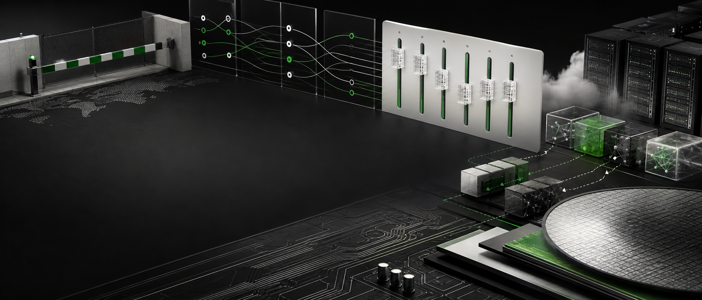
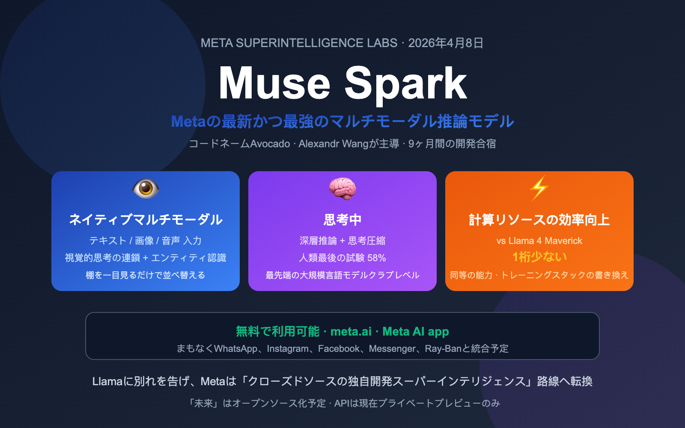
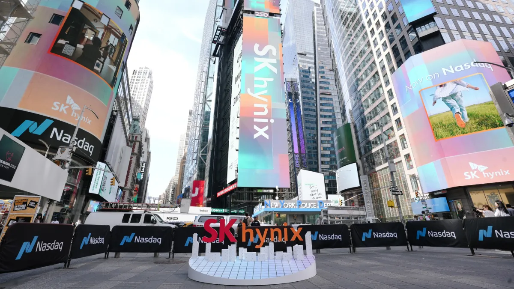
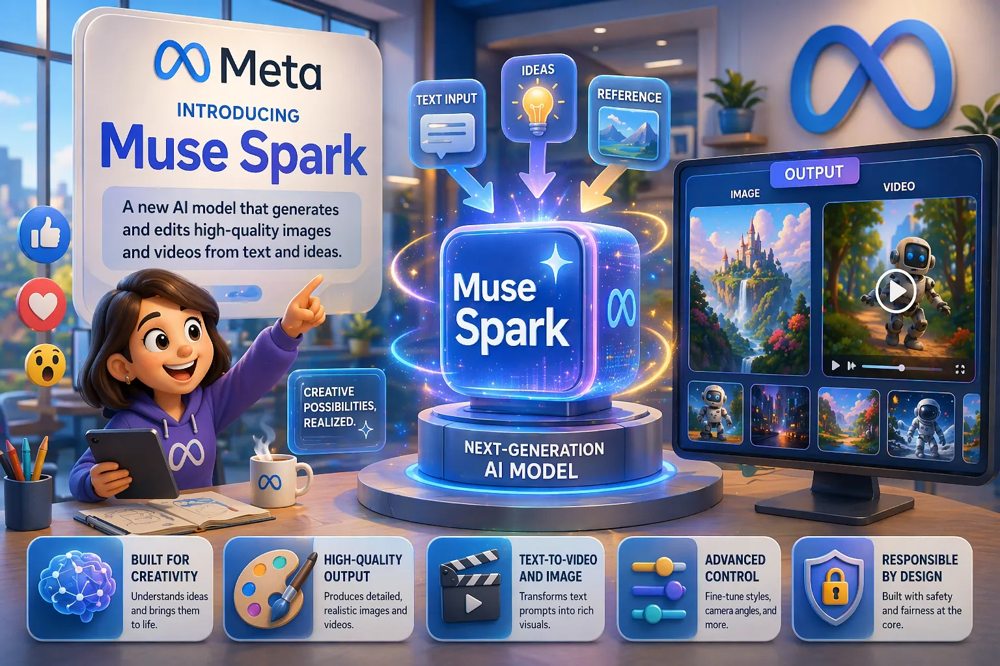
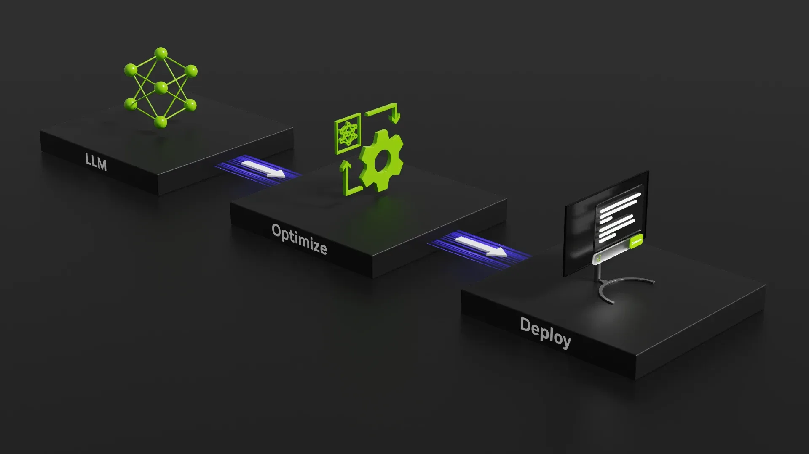
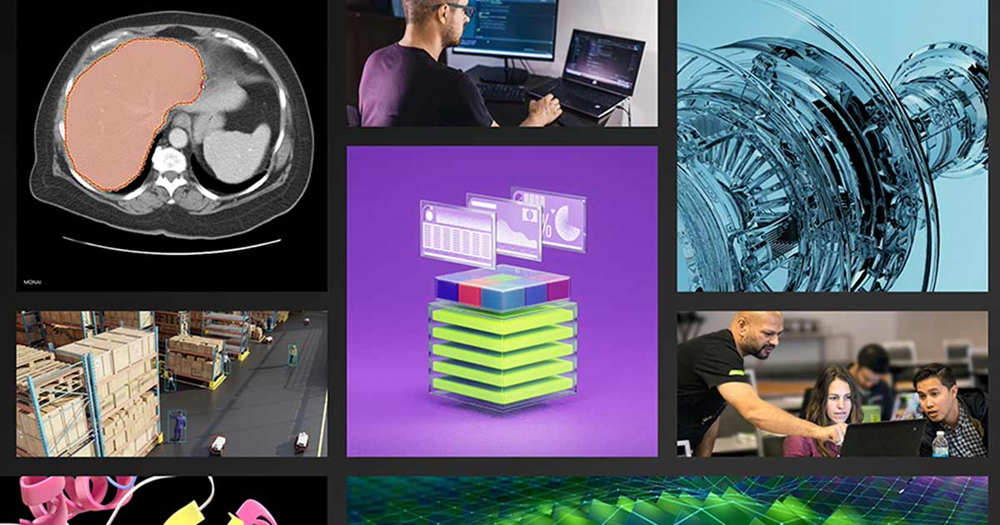
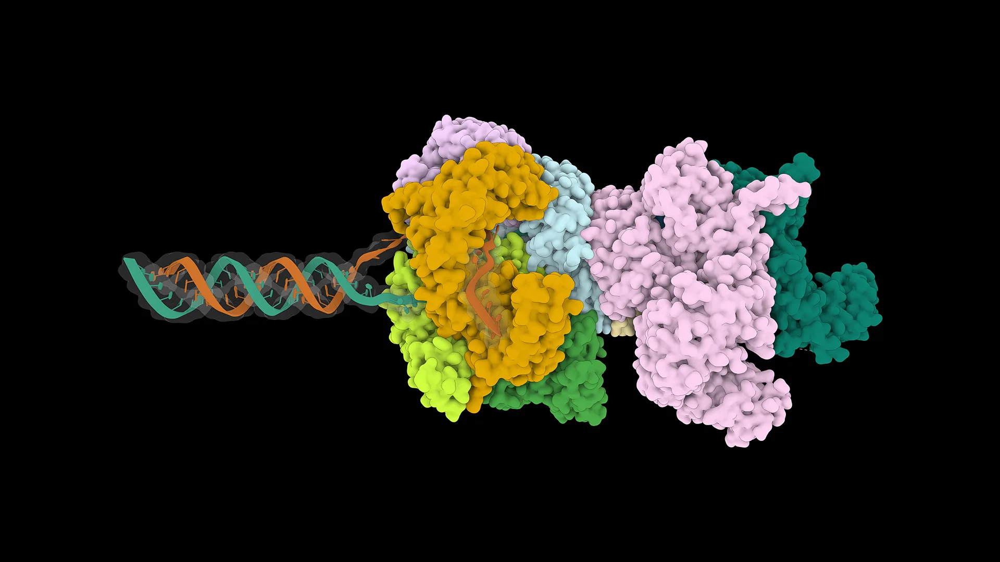
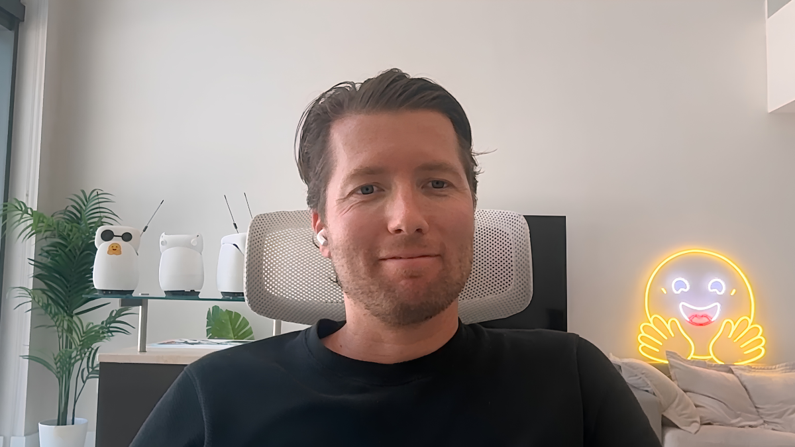

Janet 快车箱
AI Daily Briefing
2026-07-11
VOL 284

对中国创作者和创业团队来说，便宜模型和可控部署会比旗舰宣传更重要。能用 GPT-5.6 或 Muse Spark 1.1 做出生产力当然好，但如果预算、数据边界和可访问性不稳，最后还是要回到开源模型、混合路由、本地推理和供应链备选方案。
接下来 2-4 周要盯三件事：GPT-5.6 的 Sol/Terra/Luna 分层会不会逼其他厂商降价；Meta 的低价 API 能不能把 agent coding 市场打出价格战；美国会不会收紧模型访问和数据中心供应链的出口漏洞。

OpenAI 7 月 9 日宣布 GPT-5.6 开始在 ChatGPT、Codex 和 OpenAI API 推出，分为旗舰 Sol、低成本 Terra 和最快的 Luna 三档。官方称 Codex 与 ChatGPT Work 可使用 max effort，API 提供 Programmatic Tool Calling 和 Multi-agent beta，并公布 Sol 每百万 token 输入 5 美元、输出 30 美元的定价。

Meta 7 月 9 日发布 Muse Spark 1.1，并通过 Meta Model API 面向美国开发者开放 public preview。Meta 称该模型面向 coding、tool use、computer use 和多模态 agent 任务，能在复杂代码库中诊断和修复 bug，也能根据视频信息操作浏览器完成 Marketplace listing。
TechCrunch 7 月 10 日报道，Apple 起诉 OpenAI，指控其围绕 Jony Ive 设备公司 io 的交易涉及商业秘密盗用。报道提到 OpenAI 去年以 65 亿美元收购 io，以推进硬件野心；诉讼把 OpenAI 的硬件路线和前 Apple 设计团队再次推到聚光灯下。
Financial Times 7 月 10 日报道称，OpenAI 和 Google 的先进 AI 服务曾被美国国防部黑名单上的中国科技集团子公司访问，这些集团通过新加坡实体使用模型。报道称，OpenAI 在被联系后暂停了部分 Alibaba 关联用户访问，并提到 Anthropic 对中国公司采取更严格禁用策略。

TechCrunch 7 月 10 日报道，SK Hynix 在美国市场首秀中募资 265 亿美元，约合 40 万亿韩元，成为史上最大非美国公司美股上市。公司出售 1.779 亿份 ADR，每份 149 美元，并将在 Nasdaq 以临时代码 SKHYV 交易，常规代码 SKHY 将于 7 月 13 日启用。

OpenAI 的 GPT-5.6 发布页显示，Sol 是旗舰档，ChatGPT Work 中 Pro 和 Enterprise 可用 ultra 模式，Codex 中 Plus 及以上计划可用 ultra。OpenAI 称 ultra 会通过 subagents 加速复杂工作，Sol 在 Terminal-Bench 2.1 上达到 88.8%，Sol Ultra 达到 91.9%。

OpenAI 称 GPT-5.6 API 在 Responses API 中支持 Programmatic Tool Calling，让模型在内存中编写并运行程序来协调工具和处理中间结果，同时保持 Zero Data Retention 兼容。Multi-agent 功能以 beta 形式推出，可让 GPT-5.6 并发运行 subagents 并汇总结果。

Meta 在 Muse Spark 1.1 发布中称，新模型能判断什么时候写脚本更快、什么时候直接点击界面更简单，并能批量生成动作。Meta 展示了 dinner party 组织、OpenCode 调试、DeepSWE 自评和 Facebook Marketplace listing 等 agentic workflow 示例。
Hugging Face 博客 7 月 8 日列出 Native-speed vLLM transformers modeling backend，聚焦让 Transformers 模型在 vLLM 推理路径里获得原生速度。该更新属于开源推理栈继续补性能短板的一部分，目标是降低团队把模型从实验搬到服务端的摩擦。

NVIDIA Technical Blog 7 月 10 日发布 AI Model Co-Design: Hardware-Friendly LLM Design，提出模型设计应同时优化准确率、吞吐和交互延迟。文章建议线性层尺寸尽量贴近 GPU tile、使用 NVFP4 量化，并用 expert parallelism 等策略在 Blackwell 系统上扩展 MoE 模型。

NVIDIA Technical Blog 7 月 10 日发布 Reducing High-Bandwidth Memory Bottlenecks in JAX-Based LLM Training with Host Offloading，指出 LLM 训练越来越常在算力用满前先撞上 GPU memory limits。文章聚焦用 host offloading 缓解模型权重、梯度和优化器状态带来的 HBM 压力。
NVIDIA 7 月 9 日发布 Synthetic Data Generation for Financial AI Research with NVIDIA NeMo，介绍用 NeMo Data Designer、NeMo Curator 和 Nemotron 模型构建金融 NLP 合成数据流水线。示例在单个 8-way NVIDIA B200 节点上迭代 82 轮，生成 502,536 条唯一金融新闻标题。

NVIDIA Technical Blog 7 月 10 日发布 BioNeMo Agent Toolkit 相关文章，聚焦用 agent toolkit 加速 OpenFold3 等模型的 biomolecular structure prediction 和 co-folding 工作流。文章把蛋白结构预测视为已经进入主流的大规模工作负载，面向药物发现和蛋白设计场景。

MarketWatch 7 月 10 日报道称，Meta 本周股价涨幅达到 14.8%，为 2024 年 2 月以来最佳单周表现，核心驱动包括 Muse Spark 1.1、Meta Model API、定制芯片和数据中心扩张预期。报道称分析师开始把 Meta 的 AI 投入视为潜在云收入和高毛利业务。
Business Insider 7 月 10 日报道称，Anthropic 在二级市场估值一度冲到 1.2 万亿美元，成为风险投资二级市场最抢手的公司之一。报道同时指出，公司官方最近一轮估值为 9650 亿美元，并警告投资者警惕未经授权的交易和高费率 SPV。

TechCrunch 7 月 10 日采访 Hugging Face CEO Clem Delangue，报道称 Hugging Face 已被约一半 Fortune 500 使用。Delangue 表示，企业通常先用 frontier API 起步，但当规模扩大后，成本会推动它们转向 open source models。
Anthropic 7 月 9 日发布 Claude reflect beta，用户可在 Claude web 或桌面端 Settings 查看自己过去 1、3、6 或 12 个月的使用主题、使用模式和常见任务。该功能还会提供反思问题，并允许设置 quiet hours 或使用时长提醒。